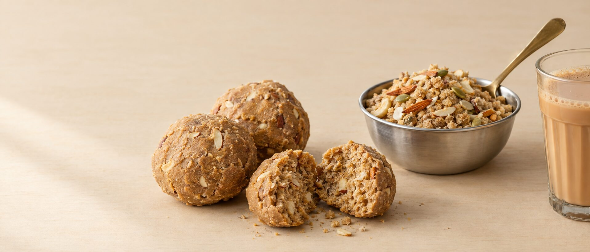

Panjiri · Pinni · Laddus · Mewa mixes
A little taste of home.
Panjiri, pinni and everyday mixes for the snack cupboard, made by hand in small batches.

- Made by hand, in small batches
- From family recipes
- Ingredients and shelf life on every pack